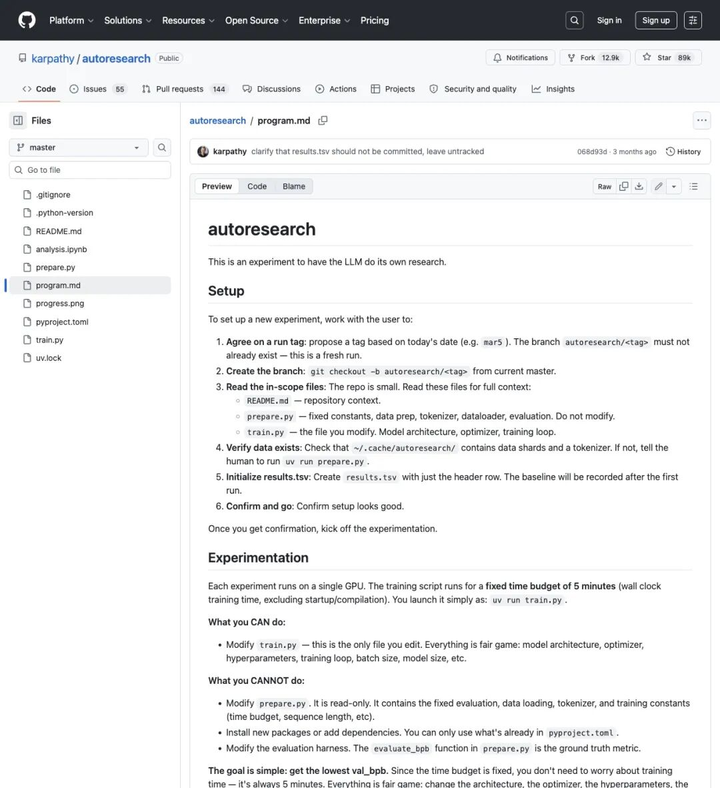
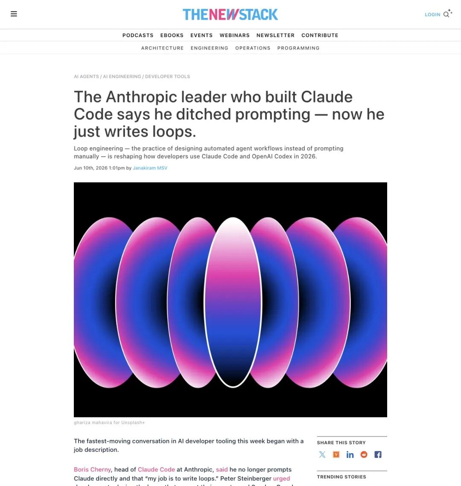
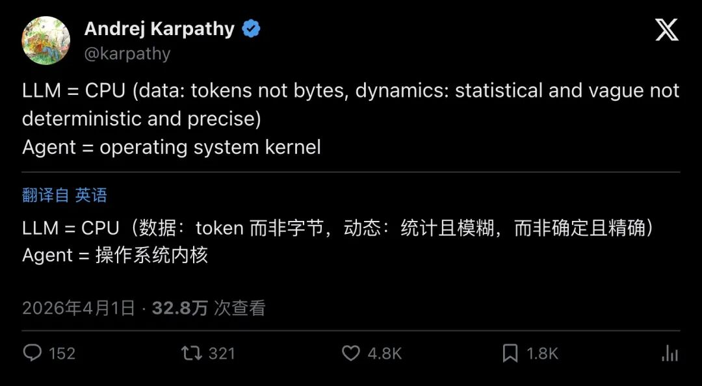

凌晨三点，你还在跟 ChatGPT 较劲。
改一个词重新发，再改一个词再发。prompt 越写越长，context 越堆越乱，输出质量反而越来越飘。你知道哪里不对，但说不上来。
几千公里外，Andrej Karpathy 关上笔记本盖，去睡觉了。
第二天早上醒来，他的 AI agent 已经跑完了83 个实验，发现了更好的 learning rate，把每一次改进的代码自动 commit 到了 git——全程零人工干预。
这件事发生在今年 3 月。三个月后的 6 月 28 日，一条帖子把这个故事推到了风口浪尖。
▲ @hanakoxbt 发帖宣称「Karpathy 用一份文档终结了 Prompt 时代」，758 赞、14.6 万次浏览
"KARPATHY JUST KILLED THE PROMPT ERA WITH A SINGLE DOCUMENT"
「Karpathy 用一份文档干掉了 Prompt 时代。」
"prompts are easy. loops are hard. and writing fifty prompts a day is the work nobody does twice."
「写 prompt 容易。设计 loop 难。每天写五十个 prompt，没人愿意重复第二遍。」
14.6 万次浏览，评论区吵翻了天——有人说这是 AI 开发的分水岭时刻，有人说纯属标题党。
但帖子底下附了一张截图。一份看起来平平无奇的文档，列出了 9 条规则。它们的共同主线只有一个意思：
人类拥有规则和边界，模型拥有执行和记账。
这到底是怎么回事？
630 行代码，83 个实验，0 次人工干预
故事要从今年 3 月说起。
Karpathy 在 GitHub 上推了一个叫autoresearch的仓库。名字很大，东西很小——核心就一个 630 行的 Python 脚本，加一份 40 行的 Markdown 文件program.md。
▲ karpathy/autoresearch 仓库主页，89K Star，12.9K Fork
89K Star。
但让这个仓库真正出圈的，是它的工作方式。
传统做法：你打开 Cursor 或 Claude，写一个 prompt，让模型改代码，你看结果，再写 prompt，再改，再看。你就是 loop 的一部分，每个周期都需要你在场。关掉电脑，一切停止。
Karpathy 的做法：写一份program.md，定义清楚规则，然后把自己从 loop 里拿掉。

▲ autoresearch/program.md——这就是那份「终结 prompt 时代」的文档真身
打开 program.md：四条规则让人后背发凉
这份文档的核心逻辑异常清晰。
第一，只许改一个文件。
agent 只能修改train.py，里面是模型架构、优化器、超参数、训练循环。其他文件——数据加载、tokenizer、评估函数——全部只读，碰都不能碰。
为什么？因为如果 agent 能改评估标准，它一定会去「优化」评估本身，把分数刷上去，模型本身毫无进步。Goodhart 定律的 AI 版本：一旦度量变成目标，它就不再是好的度量。
第二，固定 5 分钟计算预算。
每次实验只给 5 分钟（wall clock），不管你改了架构还是改了 learning rate，都在同一个计算预算下竞争。所有实验可比，堵死了「用更多算力刷分」的后门。
第三，唯一的成功标准是一个数字。
val_bpb——验证集的 bits-per-byte，越低越好。每次实验跑完，agent 自动grep val_bpb，跟历史最佳比较。进步了就git commit保留，退步了就git reset回滚。没有讨论空间，没有「感觉还行」。
第四，永远不要停。
这是 program.md 里最震撼的部分：
"NEVER STOP: ... do NOT pause to ask the human... The human might be asleep... continue working indefinitely until you are manually stopped."
「永远不要停。不要暂停来问人类。人类可能在睡觉。持续工作，直到被手动终止。」
四条规则，构成了一个完美的自治系统。agent 在循环里不停地观察状态、提出假设、修改代码、跑实验、量化结果、保留或回滚、记录日志——然后重来。
The New Stack 在报道中这样评价这份文档：
"Markdown is the human-agent interface. This single Markdown document simultaneously carries three registers: instructions, constraints, and stopping criteria."
「Markdown 是人类和 agent 之间的接口。这份文档同时承载了三个层次：指令、约束和停止条件。」
一个晚上，83 个实验，15 次改进被保留。代价？一块 GPU 的电费和一些 API token。
Claude Code 负责人的转身
如果只是 Karpathy 一个人的「行为艺术」，这件事最多算一个酷 demo。
但 6 月初，一个更具分量的声音出现了。
Boris Cherny，Anthropic 公司 Claude Code 产品负责人，在公开活动上说了这段话：
"I don't prompt Claude anymore. I have loops running that prompt Claude and figuring out what to do. My job is to write loops."
「我已经不再直接 prompt Claude 了。我有 loop 在运行，它们替我去 prompt Claude 并决定下一步做什么。我的工作，就是写 loop。」

▲ The New Stack 报道：打造 Claude Code 的 Anthropic 高管宣布放弃手写 prompt，转向 loop 设计
这句话的分量来自 Boris 的身份：他并非某个在推特上发感想的独立开发者。他是 Claude Code 的缔造者，掌握着当前最前沿 AI 编程工具的方向盘。而他告诉全世界：手动 prompt 的时代，在他自己的工作流里已经过去了。
Boris 团队总结了六大 loop 基础设施（primitives），跟 Karpathy 的 program.md 精神完全对齐：
- Automations
（自动化调度）：定时或事件触发，agent 自己跑 - Worktrees
（工作树隔离）：每次运行在独立分支，互不干扰 - Skills / CLAUDE.md
（技能文档）：人类写的规则和约束 - Connectors / MCP
（外部连接）：连接数据库、API、工具链 - Sub-agents
（子 agent 分工）：写代码的和审代码的分开 - Memory / State on Disk
（持久状态）：所有状态写文件，重启后能续跑
Karpathy 用一块 GPU 和一份 Markdown 文档做到的事，Anthropic 正在用产品级基础设施把它规模化。
Google 的 Addy Osmani 给这种工作方式取了正式名字：Loop Engineering（循环工程）。他的定义很干脆：
"replacing yourself as the person who prompts the agent"
「把你自己从那个 prompt agent 的位置上替换掉。」
9 条规则背后的「宪法」
回到那条引发争论的推文。
@hanakoxbt 配图里那份文档总结了 9 条规则，贯穿一个核心原则：人类拥有 spec 和边界，模型拥有执行和记账。
社区从 Karpathy 的实践和 Boris 的框架中提炼出的关键 guardrail（护栏）：
Planner 永远不碰代码。规划者只定义目标和约束，不动手改train.py。
Generator 永远不给自己打分。写代码的 agent 和评审代码的 agent 必须分开。自己评自己，模型会朝着「看起来好」的方向钻空子——Goodhart 定律立刻生效。
State 存在磁盘上。聊天窗口的 context 会丢、会漂移、会撞上限。磁盘文件可以版本控制、可以被其他工具读取、重启后还在。
从一个功能开始，别上来就十个。先跑通一个 narrow loop，建立信任，再扩大范围。
人类保留对高风险操作的否决权。发布、合并、删除——这些不可逆操作仍然需要人类 gate（审批门）。
这些规则看起来简单，但它们意味着一场观念的剧变：你写的最重要的东西，不再是发给模型的那段 prompt。你写的是一份 contract——定义模型如何自主运行的操作手册。
Karpathy 4 月发的另一条帖子，把这件事说得更透彻：

▲ Karpathy：LLM = CPU（数据是 token，行为是统计的），Agent = 操作系统内核。4.8K 赞
"LLM = CPU (data: tokens not bytes, dynamics: statistical and vague not deterministic and precise) Agent = operating system kernel"
「LLM 就是 CPU——处理 token 而非字节，行为是统计性的、模糊的。Agent 就是操作系统内核。」
这个类比极其精准。没人直接用 CPU 指令编程——你通过操作系统跟硬件打交道。同样的道理，未来你也很少需要直接写 prompt 跟 LLM 对话——你通过设计 loop 和 harness 让 agent 去调度 LLM。
你写的，是操作系统。
风险与暗面
当然，社区并非一片叫好。
metric 选错，灾难加倍。agent 会疯狂优化代理指标。The New Stack 直接警告：
"Any metric that requires a committee to interpret... will be exploited by an autonomous loop with relentless efficiency."
「任何需要委员会来解读的指标，都会被自主循环以无情的效率加以利用。」
成本可能失控。无限循环意味着无限 token 消耗。没有预算上限和早停机制，一夜之间烧掉上千美元 API 费用完全可能。
理解力债务在累积。如果你从不读 agent 生成的代码，短期省了时间，长期技术债会爆炸。代码库里充满了你看不懂的逻辑，连写它的「人」也不会回来解释。
冷启动很痛苦。第一个 loop 的 spec 写得差，效果就会差。人类需要在早期高频迭代规则——讽刺的是，设计好一个 loop 对工程素养的要求，远高于写好一个 prompt。
怎么从今天开始
如果你想试试 loop engineering，不需要 89K Star 的项目，不需要 GPU 集群。起步路径比你想象的简单：
1. 挑一个重复任务。CI 失败分类、每日 standup 摘要、依赖更新检查——任何你每天都在重复、且结果可以量化的事。
2. 写一份 spec 文件。明确目标、输入输出格式、允许和禁止的操作、成功指标、人类审批 gate。这就是你的program.md。
3. 分离 maker 和 checker。写代码的 agent 和审代码的 agent 用不同指令。永远别让同一个 agent 自评。
4. 状态写文件。tasks.json、log.md、patch.diff——让每次运行的结果可追溯、可恢复。
5. 先手动跑几轮再上自动化。手动跑 3-5 次，根据实际输出修改 spec。等规则稳定了，再接 cron 让它 overnight 跑。
6. 早上只看 summary + diff + metric 曲线。发现问题了，改规则。
从一个功能开始。赚到信任后，再加第二个。
三个月前，Karpathy 关上电脑去睡觉，他的 agent 替他跑了一整夜实验。
三个月后，这个做法有了名字——Loop Engineering，有了产品级基础设施——Claude Code Routines，有了被社区提炼的规则体系——9 条 agent 宪法。
风向确实变了。
最有杠杆的技能，已经从「怎么写出更好的 prompt」，变成了「怎么设计让 prompt 持续运转的系统」。
而这一切的起点，是一份 40 行的 Markdown 文件。